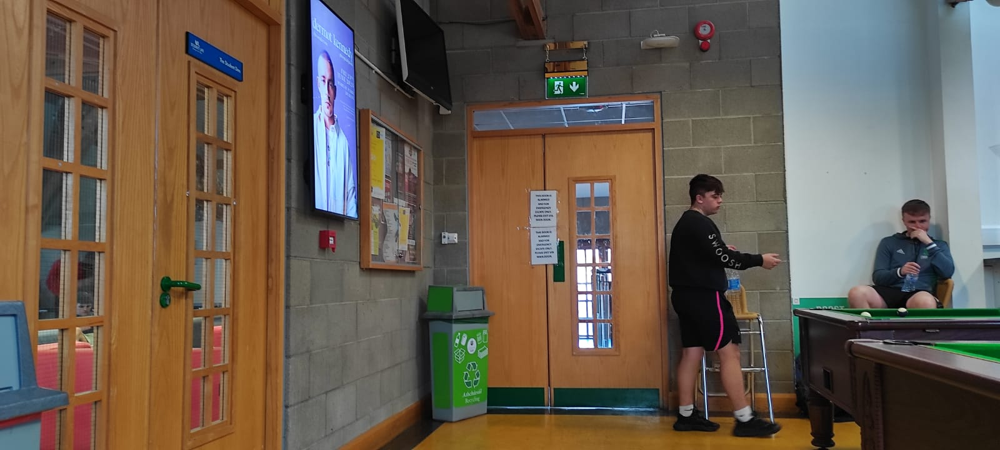

Ethnographic Observation
Area
I have selected the Ul Student Life building on campus for the ethnographic research. Despite the sunny weather, the wind was extremely strong. I've decided to take my field notes in the sports room, where the students play 8-ball pool. As soon as I walked into the room, I looked around for a spot where I could get a good overview of the whole area and start writing down my observations
To get a good look at the whole room, I positioned myself in the far left corner. After entering the room, to the left there are four different types of freezers. Within these freezers, there are soft drink bottles, water bottles, and chip bags that are all available for purchase. Upon entering the room, to the right, there is a table and chairs attached to the wall on the right side of the room. The area in the middle of the room is taken up by 8-ball pool tables, and to the left, there are sofas that are attached to the wall in three different colors: grey, green, and red. Which I have decided to go with one of the corner sofas that is gray in color
Perspective Views
Front View:
I can see a door in front of me that has a piece of paper attached to it with plaster. The subject of the paper is as follows: "THIS DOOR IS ALARMED AND FOR EMERGENCY ESCAPE ONLY. PLEASE EXIT VIA MAIN DOOR ". The same thing was written on both the top and bottom of two different papers. And a round, red fire alarm was present next to the board, and on the top of the door leading to the wall, there is a green exit board on glass with a shining light that features a human running symbol and a downwards symbol.
There is a green recycle bin on the floor, with a recycling symbol clearly displayed on the bin's label. A television hangs on the wall to the left of the door; it is turned off, and a white tube extends downward from it. There is a red, miniature firebox beneath the television, a notice board, and a digital screen on which various items are currently being displayed. In addition, there is a door to another room next to it, and the words "student life the Student Den" are written on the door..
Left View:
There are two trash cans next to me on the left; the green one is for recycling, and the cream one is for compost.On the center-top of the bins is a blue board with the word "change" and "2 euros" printed clearly. Next to that is a board covered in music stickers for which I am unable to determine the purpose.A tube from the top that is attached to three electrical boards is located between these two boxes..
Top View:
The view from the top was pretty stunning. because it was designed with woods that had a specific pattern, and to the top left and right corners, there are six lights from each side that were hanging and giving the room more brightness. There are also speakers attached alternatively to the wooden sticks that are located in the top middle of the ceiling. In addition, there was a decoration for the ceiling consisting of student life stickers hanging with.
Good Affordance
Easy Use
Slide to unlock is a useful feature that we use every day while opening the phone. The fact that this is the simplest method to unlock the phone is helping me a lot more than the number lock or the pattern. It will only unlock with fingerprint access, hence in my opinion this is the most secure method of unlocking. In this era of cybercrime and when I need to use my phone urgently, it has been a huge help to me. To sum up, I believed it to be a nice convenience for daily activities because everyone will meet the lock system in some way in modern life and because of its user-friendly design.
Actors & Activities
In this scenario, the actors are the students. As I look around, I see a wide range of characters: some are playing, others are watching, and still others are mingling with other students. At the entrance to the right side, there is a boy sitting in the chair wearing headphones and staring at his phone. He was wearing a black t-shirt, but I couldn't tell for sure what he was doing because he was facing the wall.
Next to Actor 1, there are two girls wearing blue t-shirts who are conversing and laughing.one of the girls is eating an orange, and both girls appear excited as they observe some of the boys. And the actors sitting on the opposite side of them in the room's left-hand corner on sofas are using their mobiles.
I see a billiards table with a brown bottom, a green top, black pockets, and a variety of colored balls. Two students are playing in front of me, one of whom is chewing while dressed in a black T-shirt, pink hoodie, grey pants, white socks, and white shoes with orange lines. The other student has on a blue tee under a white hoodie. Another student is sitting to my right, watching the game and chatting with the two students who are playing; he is wearing a black shirt, black pants with red lines at the sides, and white shoes. He's dressed all in black, from head to toe, and is sporting a pair of white Pumas. A number of students can be seen in the room, and it appears that they are either watching the game or discussing it with the other students There's a group of five students gathered around the sofa on the right; three of them are seated on the sofa, while the other two are standing and having a conversation. After a short while, the two players still standing began the game, while the other three were watching and discussing.
While I was watching this game in particular, I became increasingly interested in the middle and later stages of the game. At certain points, the focus of my attention was on the game to determine who would come out on top between two other students who were competing in front of me. While going over every minute detail, there were a few that surprised me because I make use of them on a daily basis but have never noticed this before. ...and while time is passing, a variety of other students are coming and playing games, while others are coming only to watch the game, some are reviewing, and others are working on their own assignments.
After being involved in things for a long time without any other thoughts, I finally felt some relief and enjoyed watching a game.
My Learnings :
- Observing every aspect of the location from all angles
- Need to watch every minute of human movement, but avoid assessing our perspective on the activity.
- After observing, I realized that every design element is connected to the room's concept and makes it more dynamic.